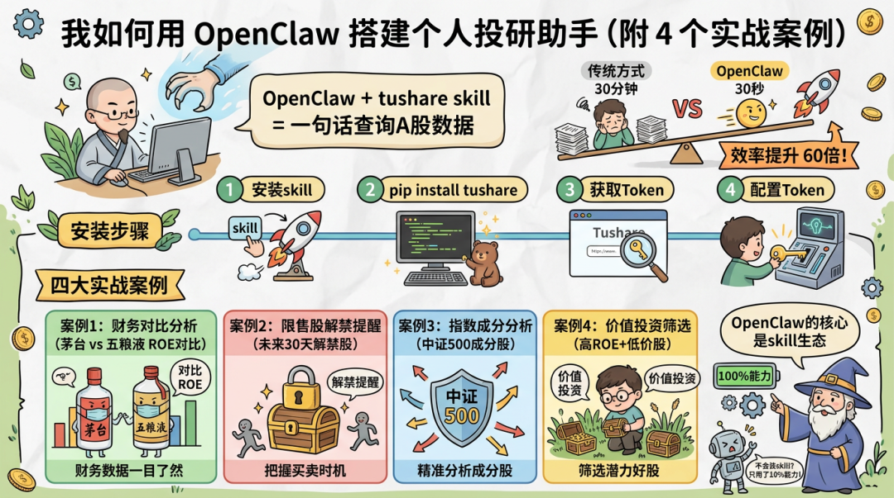
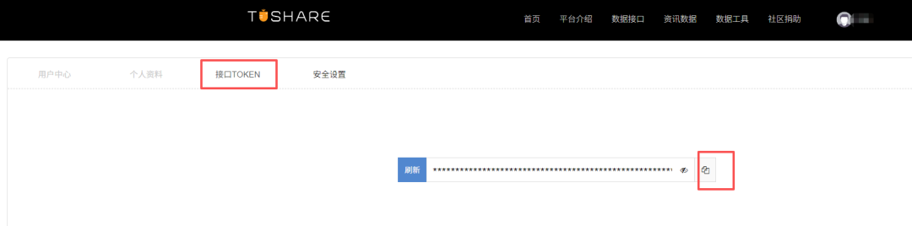
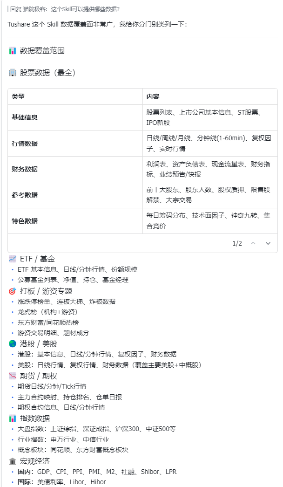
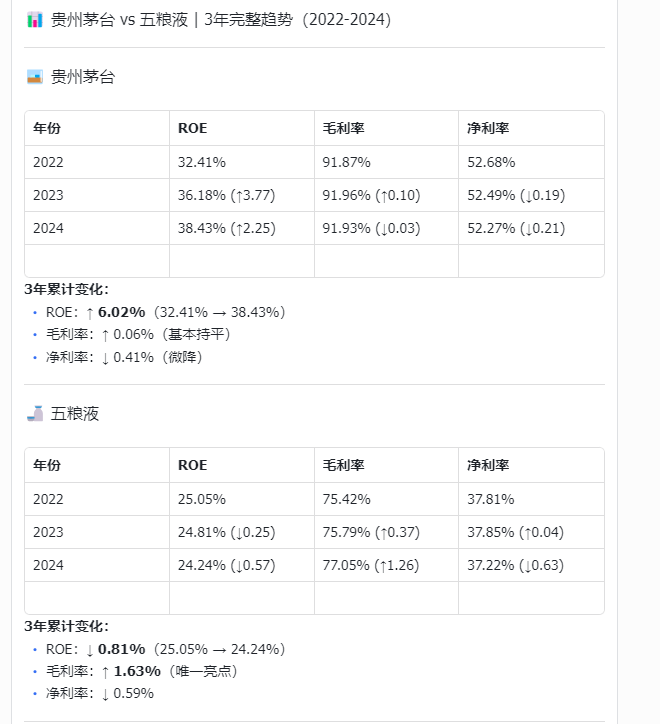
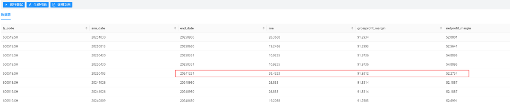
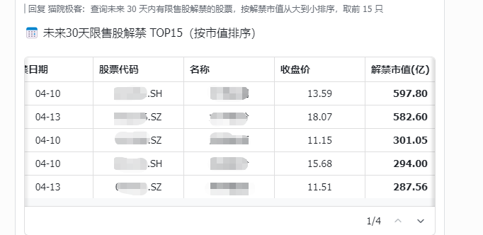
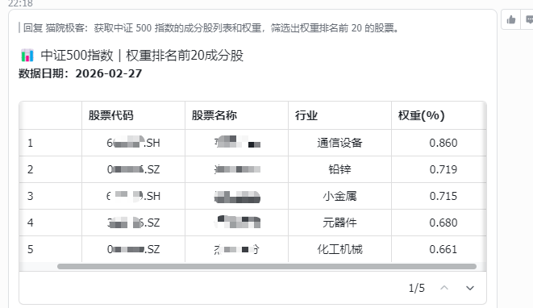
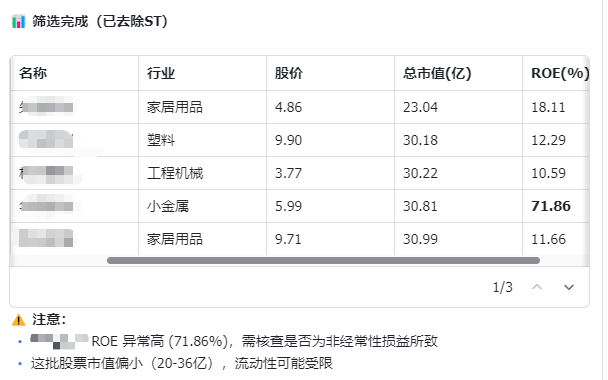

最近 OpenClaw 很火，我也一直在研究它的落地用法。
很多人装好了 OpenClaw，然后……就不知道干嘛了。
只会聊天、写文案？那真的太浪费了。
今天分享一个超实用的落地场景：OpenClaw + tushare skill。
装上这个 skill，不会代码也能一句话查询 A 股数据，成为你的投研助手。
不开玩笑，真的就一句话。
安装 tushare skill
在开始之前，先把 tushare skill 装上。
步骤 1：安装 skill
在 OpenClaw 对话框里直接说：
请安装最新版 Tushare skills，名称为 tushare-data
或者用命令行：
clawhub install tushare-data步骤 2：让OpenClaw安装 tushare库
pip install tushare -i https://pypi.tuna.tsinghua.edu.cn/simple步骤 3：获取 Token
- 1.访问 Tushare Pro 注册账号
- 2.完成信息填写（免费获得 20 积分，注意tushare部分数据需要一定的积分才能获取）
- 3.进入个人中心 → 获取 Token

步骤 4：配置 Token
在 OpenClaw 对话框里说：
帮我配置 tushare token，token 是 xxx（把你的 token 告诉它）
记得配置在环境变量，而非硬编码在Skill里。
安装完毕之后，我们可以让OpenClaw简单介绍一下这个Skill的功能：

OpenClaw 的核心不是 AI，是 skill
很多人以为 OpenClaw 就是个"增强版 ChatGPT"，能聊天、能写文案。
但它的核心其实是 skill 生态。
什么是 skill？简单说，就是给 OpenClaw 装上"超能力"。
- 装上 tushare skill → 它就懂金融数据
- 装上搜索 skill → 它就能联网查资料
- 装上其他 skill → 它就能干更多活
不会装 skill 的人，用的只是个玩具。
今天我就用手把手教你，怎么用 tushare skill 让 OpenClaw 变成你的专属投研助手。
案例 1：财务对比分析
场景
作为投资者，经常需要对比两家公司的财务指标。
传统方式：写 Python代码 → 调 API → 获取数据 → 合并 DataFrame → 格式化输出。
至少 30 分钟，还可能遇到各种报错。
OpenClaw 方式
说一句话：
对比贵州茅台和五粮液最近 3 年的 ROE、毛利率、净利率变化趋势。
30 秒出结果。

返回数据
| 公司 | 2022 ROE | 2023 ROE | 2024 ROE | 毛利率 | 净利率 |
| 茅台 | 32.41% | 36.18% | 38.43% | ~92% | ~52% |
| 五粮液 | 25.05% | 24.81% | 24.24% | 75%→77% | ~37% |
结论
茅台 ROE 持续提升（32%→38%），五粮液略有下降（25%→24%）。
效率对比：传统方式 30 分钟，OpenClaw 30 秒。
我们可以借助Tushare官网的数据工具，运行调试和AI的回答对比一下，看看有没有幻觉：

案例 2：限售股解禁提醒
场景
想知道未来 30 天有哪些股票要解禁，提前规避风险。
传统方式：写代码调接口，处理日期过滤，按市值排序……
OpenClaw 方式
说一句话：
查询未来 30 天内有限售股解禁的股票，按解禁市值从大到小排序，取前 15 只。
直接返回数据（截图TOP 5）

案例 3：指数成分分析
场景
想了解中证 500 指数的成分股和权重分布。
传统方式：调 index_weight 接口，处理数据，排序……
OpenClaw 方式
说一句话：
获取中证 500 指数的成分股列表和权重，筛选出权重排名前 20 的股票。
返回数据（截图TOP 5）

分析
中证 500 成分股权重分散，体现中盘股特征。权重集中在科技、有色、电子等板块。
案例 4：价值投资筛选
场景
想筛选低价、高 ROE 的股票。
传统方式：调 daily_basic + fina_indicator 接口，写筛选逻辑……
OpenClaw 方式
说一句话：
帮我筛选出 A 股市场中 ROE 排名前 20%、股价小于 10 元的股票，按市值从小到大排序，取前 10 只，去除ST。
返回数据（TOP 5）

总结
OpenClaw 的核心是 skill。
不会装 skill，用的是 10% 的能力。
本文介绍了 tushare skill 让 OpenClaw 更懂金融，一句话实现数据查询。
通过4 个实战案例覆盖高频场景：财务对比、解禁查询、指数成分、价值筛选。
先把工具用上手，比什么都重要。